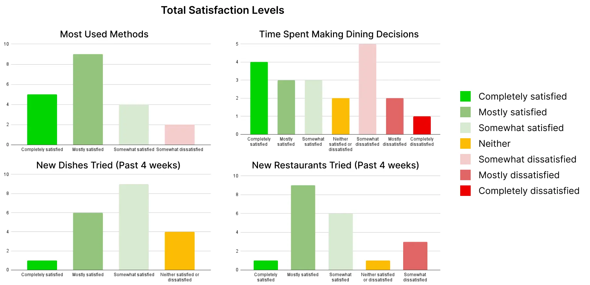
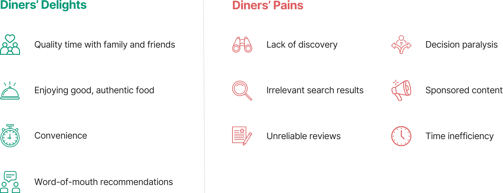

primary research
Talking to dissatisfied diners
Drawing from my secondary research, I formed a few assumptions to validate in user research.
Diners are most frustrated by limited discovery and slow decision-making.
↗ RefinedOvercommercialization and fake reviews create decision paralysis.
✓ ValidatedDiners want a trustworthy, personalized, food-focused alternative.
✓ ValidatedThese helped me craft a screener survey that recruited diners for interviews and collected qualitative and quantitative data on 4 different aspects of dining out. I kept these assumptions at the back of my mind as I navigated the rest of user research, as I didn't want them to create bias.
I surveyed 20 participants and conducted 7 semi-structured interviews with the most dissatisfied diners.
At a high-level, my survey found that the largest painpoint for diners is making decisions. My findings really helped me structure my user interviews to delve deeper into diner experiences.

Completely satisfied
Mostly satisfied
Somewhat satisfied
Neither
Somewhat dissatisfied
Mostly dissatisfied
Completely dissatisfied
The interviews were very insightful! Using FigJam, I synthesized the interview data with an affinity map.
Below is a summary of what I unconvered on diners' delights and painpoints:


There's a certain emotional trust about talking to someone about it...
If I had a magic wand, I’d want to receive
suggested items that would suit my tastes.
Conclusion
My research validated all of my initial assumptions except for one. Diners are more focused on their struggle to confidently making decisions than discovering new dining options. As I expected, discovery is still a significant pain point, but decision-making takes precedence because it is the most critical roadblock in their journey.